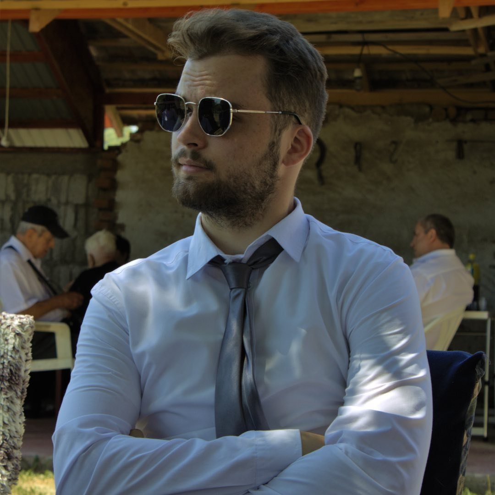

<body data-theme="luxury">
  <section>
    <div class="flex parent">
      <div class="w-1/2 flex flex-col justify-center gap-5 tracking-[5px] left-side">
        <div>
          <h3 class="quotation">“I'm obsessed with giving the audience something they don't see coming.”</h3>
        </div>
        <div class="div2">
          
        </div>
      </div>
      <div class="w-1/2 px-10 m-10 right-side flex justify-center flex-col">
        <div class="div3 px-5">MY STORY</div>
        <div class="div4">
          <p class="py-5 px-5 mb-5">
            Hello, my name is Ákos Bartus, and I'm 24 years old. Despite my youth,
            I've had a long-standing fascination with computers and their
            technologies. Ever since childhood, my interest in video games has
            persisted, and it didn't take long for me to realize that I wanted to
            pursue a career in IT. 
            <br>
            <br>
            I consider myself a creative individual, always
            eager to tackle challenges as part of a team. I thrive in
            collaborative environments, where brainstorming and sharing ideas lead
            to innovative solutions. Moreover, I have a keen appetite for learning
            new things. Whether it's mastering a new programming language or
            staying updated on the latest trends in technology, I'm constantly
            seeking opportunities to expand my knowledge and skill set.
            <br>
            <br>
            Looking
            ahead, as I progress in my journey as a frontend developer, I aspire
            to broaden my expertise by venturing into backend development. I
            believe that a well-rounded understanding of both frontend and backend
            technologies will not only make me a more versatile developer but also
            enable me to contribute more effectively to diverse projects.
            <br>
            <br>
            I'm
            excited about the prospect of continuing to grow and evolve in the
            ever-evolving landscape of software development.
          </p>
        </div>
        <div class="div5">
          <button class="mx-5 btn btn-outline btn-primary">
            Get my resume
          </button>
        </div>
      </div>
    </div>
  </section>
</body>
